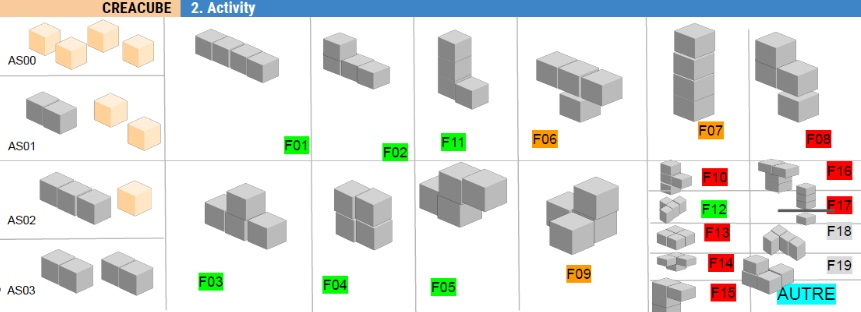

Analyse semi-automatique de vidéos de séances d'apprentissage
Projet d'initiation à la recherche
Younes Jallouf | Elie-Alban Lescout | Hugo Tardy
Plan
- Contexte et objectif du projet
- Approches étudiées
- Mise en œuvre
- Construction d'un jeu de données
- Perspectives et conclusion
Contexte
- Comprendre le développement de la pensée informatique chez l'humain.
- Réalisation d'activités d'informatique débranchées
Objectif
Annoter les vidéos manuellement est chronophage... On cherche donc à automatiser le processus.
 Interface Creacube (Illustration du LINE)Objectif
{
...
"6": {
"start": "123.755",
"end": "125.013",
"label": "F07"
},
"7": {
"start": "128.926",
"end": "129.988",
"label": "F01"
},
...
}
Modélisation
Diagramme de classe global

Structure des routes

Fonctionnement des feux

Diagramme d'activité des voitures

Circulation d'une voiture

Diagramme d'activité des piétons

Circulation d'un piéton

Démonstration
Fenêtre de configuration
Fenêtre principale
Développement
Répartition des tâches

Usage de github

Difficultés rencontrées
- Merge parfois très compliqués dans github lorsqu'on a travaillé sur les même fichiers
- Problèmes de conventions de coordonnées
- Problème de shallow-copy/deep-copy d'un tableau d'objets
Perspectives
- Optimisation de la mémoire
- Meilleure exhaustivité statistique